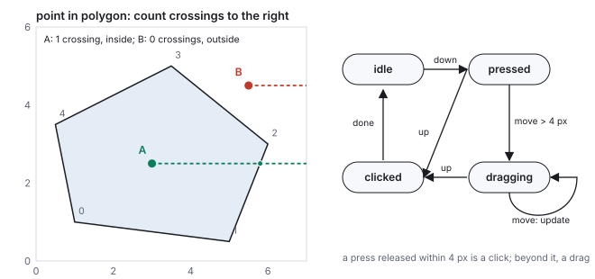

This chapter links to the course’s interactive demos and uses MathJax for its
formulas. Read it through the course website (or download the file and open it in a
browser); a Canvas inline preview will reach neither the demos nor the math.
All chapters.
CSS 551 · Advanced 3D Computer Graphics · course text
Course text · how a person gets into the loop: the event-driven frame loop and the fixed timestep inside it, the model–view–controller separation the course’s demos are built on and the undo it makes possible, events and device pixels, the path from a mouse position back into the world by unprojection, picking by ray and by ID buffer, hit testing in two dimensions, dragging with constraints and snapping, the drag gesture as a state machine, rotating with an arcball or an orbit, the latency between a click and the photon, and what virtual reality adds. Not tied to a lecture; pairs with every demo on the course site.
A renderer draws a frame. An interactive system draws a frame, waits for the person, and draws the next one differently. This chapter is about the second half. It starts with the loop and the discipline that keeps it sane, model–view–controller, illustrated by the course’s own transform demo, whose three numbers drive a cube and a matrix panel in lockstep. It then runs the viewing pipeline backward: a mouse position is a pixel, a pixel is a point in normalized device coordinates, and the inverse of the projection and view matrices turns it into a ray, worked on the same camera and pixel as the ray-tracing chapter so the two constructions can be checked against each other to four digits. That ray picks objects, or a rendered ID buffer does it in one read; it lands a dragged object on the ground plane; and two of them turn a mouse drag into a rotation by Shoemake’s arcball, worked to the quaternion. Between those, the chapter covers what a working tool needs and a renderer does not: the event types and the device-pixel ratio that silently breaks picking, hit testing in two dimensions, snapping, a drag gesture as a state machine, undo as a consequence of the model, and a fixed timestep that keeps a simulation honest under a varying frame rate. It ends with time: how many milliseconds pass between the click and the pixel, why, and what a head-mounted display does about it.
The frame loop of the rasterization chapter ran on a timer:
read input, update, render, present, sixty times a second. An interactive application has two
variants of it. The continuous loop renders every frame whether or not anything changed,
which a game needs because something always changes. The on-demand loop renders only when
an event has changed the state: the course’s demos are built this way, and an idle demo draws
nothing and uses no GPU, which is why a page with a dozen of them stays responsive. The two agree on
the structure: an event (mouse, key, wheel, slider, timer, network) arrives, a handler edits
the state, and a render is requested. What no correct program does is draw in the event
handler: the handler changes state and asks for a frame, and the frame reads the state. Simulation
that must advance in real time runs on a fixed timestep inside the loop, as the next section
works out, independent of how often frames are drawn.
2 · Time in the loop: the fixed timestep
The animation chapter showed that an integrator’s
behavior depends on its step. A loop that steps the simulation by the measured frame time therefore
behaves differently at 30 and at 144 frames per second, and differently again when a frame stalls:
a spring that is stable at 16 ms can explode at 100. The remedy is to decouple the two clocks.
Definition (the accumulator)
Keep a fixed simulation step \(\Delta t\) and an accumulator of unsimulated time. Each frame, add
the measured frame time to the accumulator, run as many fixed steps as fit, and carry the remainder
forward; render the state interpolated between the last two steps by
\(\alpha = \text{remainder}/\Delta t\). Clamp the frame time (at 250 ms, say) so that a stall cannot
demand hundreds of steps and stall the next frame in turn, the spiral of death.
Worked example (five uneven frames)
\(\Delta t = 10\) ms, frames of 16, 20, 33, 8 and 17 ms. Frame 1: accumulator 16, one step, 6 left.
Frame 2: 26, two steps, 6 left. Frame 3: 39, three steps, 9 left. Frame 4: 17, one step, 7 left.
Frame 5: 24, two steps, 4 left. Nine steps in 94 ms of wall time, which is 90 ms of simulation plus
the 4 ms carried, and every step was exactly 10 ms regardless of the frame’s length. The
render in frame 3 interpolates at \(\alpha = 0.9\), nearly the newest state; in frame 5 at 0.4. The
simulation is now deterministic: the same inputs give the same states on any machine, which is
what replays, networked physics and reproducible bugs require.
3 · Model, view, controller, and undo
Definition (MVC)
The model is the application’s state, the only thing that changes. A view is
a function from the model to something visible; it owns no state of its own. A controller
translates events into edits of the model and never touches a view. Several views may show one
model; a change to the model reaches all of them because they read it, not because anyone tells them.
The loop as the course’s transform demo implements it. The model is three numbers; both views rebuild from them.
The course’s transform demo is the pattern in its smallest form. Its model is
\(\{t_x, r_y, s\}\), a translation, a rotation about \(y\) and a scale. Its controller is three
sliders, each of which writes one number and requests a render. Its two views both read the same
matrix, \(T(t_x, 0, 0)\,R_y(r_y)\,S(s, s, s)\), built by the TRS routine of
the affine chapter: one view sets it as a cube’s
transform, with the library’s automatic matrix update switched off so the model is the only
source; the other prints its sixteen entries. They cannot disagree, because neither stores anything.
Every other demo on the site is the same shape with a different model: an azimuth and elevation, a
light position and shininess, a texture offset and tile count.
See it liveOne model, two views:
drag any slider and watch the cube and the matrix change together.
The discipline pays off at exactly the moments it feels like overhead. Undo is a stack of past models.
Saving is serializing the model. A network-synchronized scene is a model replicated between machines.
A test is a model and an expected view. A view that keeps its own copy of the state breaks every one
of these, and a controller that draws breaks the loop.
Worked example (undo, two ways)
The transform demo’s model is three doubles, 24 bytes; a stack of 1,000 snapshots is 24 kB, and
undo is a pop. A modeling tool whose model is the bunny’s 35,947 vertex positions, 431 kB per
snapshot, fits 243 snapshots in 100 MB, which is a short session. The command pattern stores
the edit instead of the state: “move vertex 1,204 by \((0.1, 0, -0.05)\)” is an index and a
vector, 16 bytes, with an inverse that is the same command negated; a million of them cost what
forty snapshots did. The price is that every edit must be expressible as a reversible command,
which is a constraint on the controller and no constraint on the views: they still read the model.
The other axis of interface architecture is retained against immediate mode. A
retained UI (the browser’s DOM, three.js’s scene graph) keeps the widgets as objects the
program creates once and updates; an immediate-mode UI (the style of Dear ImGui) rebuilds the
interface from the model every frame in the render call, with no widget objects at all. Immediate
mode is MVC with the view reduced to a function that runs sixty times a second, and it is why
debugging overlays and tool panels in engines are written that way: there is no state to get out
of sync.
4 · Events and device pixels
The controller’s raw material is the event stream. In a browser, the ones a graphics
application handles:
event
carries
used for
pointerdown, pointermove, pointerup
position, button, pressure, pointer type (mouse, pen, touch)
picking, dragging, orbiting; the unified form of the mouse and touch events
wheel
delta in lines or pixels, with modifier keys
zoom (the orbit controller’s dolly), scroll
keydown, keyup
key code, repeat flag
fly controls (the demos’ WASD), shortcuts, focus traversal
touchstart, touchmove (multi-touch)
a list of contacts
pinch to zoom, two-finger rotate; each contact is a pointer
gamepad (polled, not an event)
axes in \([-1, 1]\), buttons
continuous control, read once per frame
resize, visibilitychange
the new size; hidden or shown
reallocating the framebuffer; pausing the loop
Positions arrive in CSS pixels relative to the page, and the canvas draws in device
pixels: on a high-density display the drawing buffer is \(\text{devicePixelRatio}\) times larger
in each direction than the element. The course’s scene shell sizes the buffer at the element’s
size times the ratio (capped at 2) and re-reads the element’s true on-screen rectangle on every
resize, because a canvas inside a scaled slide has a different on-screen size from its layout size.
Pitfall (the wrong pixel grid)
An 800 by 500 CSS-pixel canvas at ratio 2 has a 1,600 by 1,000 buffer. A mouse event at CSS
\((300, 200)\) is at buffer \((600, 400)\). Normalized against the CSS size it is
\((-0.249, 0.198)\), correct; normalized against the buffer size, as code that reads
canvas.width does, it is \((-0.624, 0.599)\): every pick lands in the wrong place by a factor
of two from the center, and works on the developer’s low-density monitor. The normalization must
use the size the event was measured in, the element’s bounding rectangle, and the mismatch is
the first thing to check when picking is off by a constant factor.
5 · From the mouse to the world: unprojection
A mouse event delivers a pixel. Everything the application wants to do with it, pick an object, drag
it, aim, needs a point or a ray in the world, and that is the viewing
chain run backward. Pixel to normalized device coordinates is the viewport transform inverted:
\(s_x = 2(p_x + \tfrac12)/W - 1\), \(s_y = 1 - 2(p_y + \tfrac12)/H\). NDC to world is the inverse of
the projection and view matrices, applied to two points with the same \((s_x, s_y)\) and
\(z = -1\) and \(z = +1\), the near and far planes, followed by the perspective divide: the two world
points span the ray.
Worked example (the ray-tracing chapter’s pixel, by matrices)
The illumination demo’s camera at \((3, 3, 6)\) looking at the origin, field of view \(28^\circ\),
near 1, far 20, a \(150\times150\) image, and the pixel \((89, 62)\) of the marked point:
\((s_x, s_y) = (0.1933, 0.1667)\). Multiplying \((0.1933, 0.1667, -1, 1)\) by \((PV)^{-1}\) and
dividing by \(w\) gives the near point \((2.627, 2.630, 5.147)\), at distance 1.002 from the eye; with
\(z = +1\), the far point \((-4.454, -4.406, -11.065)\), at distance 20.04. Their difference normalized
is \((-0.372, -0.370, -0.852)\), the same direction to four digits as the ray built directly from the
camera basis in the ray-tracing chapter. The matrix route needs
no knowledge of the camera’s construction, only its two matrices, which is why it is what
libraries implement; the basis route is what it computes. Along that ray the sphere of radius 1.2 is
hit at \(t = 6.228\), at \((0.683, 0.698, 0.697)\): the click picks the marked point.
Two mouse positions unprojected from the same camera: one ray hits the sphere, the other is intersected with the ground plane to place a dragged object.
6 · Picking: by ray, and by ID buffer
Ray picking intersects the unprojected ray with the scene and takes the nearest hit,
exactly the ray-tracing chapter’s search with one ray: bounding volumes first
(the hierarchy), then triangles, in world space or, more
cheaply, with the ray transformed into each object’s local frame by its inverse model matrix so
that the object’s own bounding box applies. It runs on the CPU, needs the geometry in memory,
and returns the hit point and triangle as well as the object, which a modeling tool needs. It is
what three.js’s raycaster and every physics engine’s ray query do.
ID-buffer picking (the item buffer of Weghorst, Hooper and Greenberg,
1984) renders the scene once more with every object drawn in a flat, unique color equal to its
identifier, and reads back the single pixel under the mouse. The GPU does the search; the result
is exact to the pixel including every occlusion and every alpha-tested edge; and the cost is one
extra render and one readback, which stalls the pipeline for a frame if done synchronously. It returns
an object, not a point.
A shaded frame and its ID buffer, rendered by the chapter’s edge-function rasterizer with depth. The marked pixel reads \((255, 0, 0)\) in the ID buffer: object 1, the red triangle, which is in front of the blue one there.
Worked example (reading the buffer)
Three triangles at depths 2, 1 and 3 (object 2 nearest). At pixel \((100, 70)\) the depth test leaves
object 1, so the ID buffer holds its color \((255, 0, 0)\); the readback decodes it as identifier 1.
With 8 bits per channel the encoding \(\text{id} = r + 256g + 65536b\) distinguishes 16.7 million
objects, and a second render target can carry the triangle index or the depth for a point.
7 · Hit testing in two dimensions
Interface elements, map regions and the handles of a gizmo are two-dimensional shapes in the
window, and picking them needs no ray. The tests are the plane geometry of
the vectors chapter.
Definition (point in polygon by crossing number)
Cast a ray from the point to the right (or any fixed direction) and count the polygon edges it
crosses: an odd count means inside. An edge from \((x_i, y_i)\) to \((x_j, y_j)\) crosses the ray from
\(\mathbf{p}\) when exactly one endpoint is above \(p_y\) and the edge’s \(x\) at height \(p_y\),
\(x_i + (x_j - x_i)(p_y - y_i)/(y_j - y_i)\), is greater than \(p_x\). The half-open comparison handles a
ray through a vertex without double counting. A circle is \(|\mathbf{p} - \mathbf{c}|^2 \le r^2\), a
rectangle four comparisons, a rotated rectangle the inverse transform of \(\mathbf{p}\) followed by the
same four.

Left: the crossing test on a pentagon. Right: the drag gesture of Section 8 as a state machine.
Worked example (two points against a pentagon)
Pentagon \((1, 1), (5, 0.5), (6, 3), (3.5, 5), (0.5, 3.5)\). Point \(A = (3, 2.5)\): the edges that
straddle \(y = 2.5\) are edge 4–0, crossing at \(x = 0.7\) (left of \(A\), not counted), and edge
1–2, at \(x = 5.8\) (right, counted): one crossing, inside. Point \(B = (5.5, 4.5)\): edges 2–3
and 3–4 straddle \(y = 4.5\), at \(x = 4.125\) and \(2.5\), both left of \(B\): zero crossings, outside.
A circle of radius 1.2 at \((2, 2)\) against \((2.8, 2.9)\): squared distance \(0.64 + 0.81 = 1.45\)
against \(r^2 = 1.44\), outside by a hair. Handles that are hard to hit are given a larger test
shape than their drawn one; a target of at least 8 pixels for a mouse and about 44 for a finger is
the usual rule.
8 · Dragging: constraints, snapping, and the gesture
A mouse position is two numbers and a world position is three; dragging an object needs a third
constraint, and the usual ones are a plane or an axis. Dragging on the ground plane intersects the
unprojected ray with \(y = 0\): \(t = -o_y/d_y\), and the object goes to \(\mathbf{o} + t\mathbf{d}\).
Dragging along an axis takes the point of the axis nearest the ray. A manipulator gizmo is three
axes and three planes drawn as handles, each a constraint the person picks by clicking it (Section 4)
before dragging. A vertex of the mesh-grid demo, lifted by a slider there, would be dragged in a
modeling tool along the camera’s up axis or on a plane facing the camera, and the normals
recomputed as the meshes chapter describes.
Worked example (landing on the ground)
Pixel \((60, 110)\) of the same camera: \((s_x, s_y) = (-0.1933, -0.4733)\), ray direction
\((-0.426, -0.512, -0.746)\). The ray leaves the eye at height 3 and descends at \(0.512\) per unit, so
it reaches \(y = 0\) at \(t = 3/0.512 = 5.861\), at \((0.501, 0, 1.629)\): the object is placed there,
and as the mouse moves the intersection slides along the plane. A ray pointing above the horizon
has \(d_y \ge 0\) and never reaches the plane; a robust tool clamps the drag at the last valid point
rather than sending the object to infinity.
Worked example (snapping)Grid snapping rounds the dragged coordinate to a multiple of the grid: on a 0.25 grid, 1.37
goes to 1.25, 1.13 to 1.25, 2.5 stays; an angle on a \(15^\circ\) grid sends \(37^\circ\) to 30,
\(52.4^\circ\) to 45 and \(97^\circ\) to 90. Soft snapping snaps only within a radius, so the
object moves freely and clicks into place near a grid line: with radius 0.05, 1.28 (0.03 from 1.25)
snaps and 1.37 (0.12 away) does not. Snapping to other objects’ vertices or edges is the same
test against a list of candidates, usually with the closest within the radius winning, and it is the
feature that makes a modeling tool feel precise.
Definition (the drag gesture as a state machine)
Four states: idle; pressed on pointer down, remembering the position; dragging
once the pointer has moved more than a threshold (4 pixels here) from it, with every further move
updating the drag; and on pointer up, either clicked (from pressed) or the end of the drag
(from dragging), then idle. The threshold is what lets one button both click and drag: a press
that wobbles by 3 pixels before release is a click.
Worked example (click or drag)
A press followed by moves to offsets \((1, 0)\), \((2, 1)\), \((3, 1)\), distances 1, 2.24 and 3.16
pixels, all under 4, then a release: a click, and the object under the press is selected. A press
followed by a move to \((3, 3)\), distance 4.24: the machine enters dragging, and from then on the
release ends a drag and selects nothing. The same machine with a timer instead of a distance
distinguishes a tap from a long press on a touch screen; with a second contact it becomes a pinch.
9 · Rotating with the mouse: arcball and orbit
Two numbers must also become a rotation, which has three degrees of freedom. Shoemake’s
arcball (1992) makes the window the front of a sphere: a mouse position \((x, y)\) in
\([-1, 1]^2\) is lifted to the sphere point \((x, y, \sqrt{1 - x^2 - y^2})\), or to the rim when it
falls outside the disk, and a drag from \(\mathbf{p}_1\) to \(\mathbf{p}_2\) is the rotation that carries
one to the other: axis \(\mathbf{p}_1\times\mathbf{p}_2\), angle \(\arccos(\mathbf{p}_1\cdot\mathbf{p}_2)\), the
axis-angle form of the rotation chapter. The rotation is
composed with the object’s current one, and a drag around the rim rolls about the view axis,
which no pair of sliders can do.
The arcball. A drag inside the disk is a rotation about an axis in the window plane; a drag along the rim is a roll.
Worked example (one drag)
Mouse from \((0.2, 0.1)\) to \((0.5, 0.3)\). Lifted: \(\mathbf{p}_1 = (0.2, 0.1, 0.975)\),
\(\mathbf{p}_2 = (0.5, 0.3, 0.812)\). The axis is \(\mathrm{normalize}(\mathbf{p}_1\times\mathbf{p}_2) =
(-0.545, 0.838, 0.026)\), nearly in the window plane, perpendicular to the drag; the angle is
\(\arccos(0.2\cdot0.5 + 0.1\cdot0.3 + 0.975\cdot0.812) = 22.8^\circ\); the quaternion is
\((-0.108, 0.166, 0.005, 0.980)\). A position outside the disk, \((1.3, 0.2)\), lifts to the rim point
\((0.988, 0.152, 0)\), so the mapping is continuous across the edge and a drag that leaves the disk keeps
working as a roll.
The course’s demos use the simpler orbit controller, which is
the viewing chapter’s azimuth and elevation driven by the
mouse: a horizontal drag changes the yaw by \(0.4^\circ\) per pixel, so a 90-pixel drag is
\(36^\circ\); a vertical drag changes the pitch, clamped short of the poles; a wheel notch
multiplies the distance by 1.12 (five notches out, 1.76; five in, 0.53), so that zooming feels
the same at every distance. An orbit cannot roll and never lets the horizon tilt, which is the
behavior wanted for inspecting an object; the arcball is the behavior wanted for turning one in the
hand. Both are controllers in the sense of Section 3: they edit the camera’s model and request a
frame.
10 · Latency, threads, and virtual reality
Responsiveness is a number: the time from an input to the photon that shows its effect. It is
longer than a frame. An input arriving just after a frame started is read at the next frame start;
that frame is rendered during the following interval and presented at the vertical sync after; and
the display then scans the frame out over one more interval, top row first, so a pixel halfway
down the screen changes half a frame after the swap.
Input to photon at 60 Hz with double buffering: 38.7 ms in the worked case, about two and a half frames.
Worked example (the budget)
At 60 Hz a frame is 16.7 ms. An input at 3 ms waits 13.7 ms for the next frame start, 16.7 ms for
that frame to render and reach the swap, and 8.3 ms for scan-out to reach mid-screen: 38.7 ms. At
120 Hz every term halves, 17.8 ms. Triple buffering, which lets the GPU run a frame ahead, adds one
full frame, 16.7 ms, in exchange for smoother throughput; games that care about latency disable it,
and some read input again just before rendering to cut the first term. Below about 20 ms a pointer
feels attached to the hand; at 40 it feels like dragging something through water; virtual-reality
head tracking needs under 20 ms end to end and reprojects the last frame to the newest head pose
just before scan-out to get there.
Engines cut the first term by running input and simulation on one thread and rendering on
another, one frame behind: the render thread draws frame \(n\) while the game thread computes
\(n + 1\), which keeps both busy at the cost of a frame of latency, and a third thread submits GPU
work. The browser is single-threaded for the page, so the course’s demos take the other route:
no continuous loop at all, and a render only when a handler changes the model, so that the render
happens in the same task as the input that caused it.
Worked example (a head-mounted display)
At 90 Hz a frame is 11.1 ms and the double-buffered pipeline above is 27.8 ms from pose to
mid-screen photon. A head turning at \(100^\circ/\text{s}\), an ordinary glance, moves \(2.78^\circ\)
in that time: an object one meter away is drawn 4.9 cm from where it should be, 56 pixels at 20
pixels per degree, and the world visibly swims. Reprojection reads the head pose again just
before scan-out and re-renders the finished frame as a textured quad rotated by the difference,
leaving only the scan-out half-frame of 5.6 ms uncorrected: \(0.56^\circ\), about 1 cm, below the
threshold of notice. It corrects rotation exactly and translation only approximately (the frame has
no parallax), which is why headsets render at a high rate and reproject rather than reproject
alone.
Accessibility is the same discipline read from the other side: every action the pointer can take
needs a keyboard route (the demos’ WASD, Q and E, and the Escape that closes a panel), focus
must be visible, and a screen reader needs the model in words, which a view can supply because it
reads the model like any other.
Hands-on
Unproject the ray-tracing chapter’s pixel with the course library and hit the sphere:
prints dir -0.3720 -0.3696 -0.8515 and t 6.228 hit 0.683 0.698 0.697, the numbers of Section 5.
The accumulator of Section 2:
node -e "let acc=0,dt=10;for(const f of [16,20,33,8,17]){acc+=f;let n=0;while(acc>=dt){acc-=dt;n++}console.log('frame',f,'ms ->',n,'steps, leftover',acc)}"
prints five lines ending frame 17 ms -> 2 steps, leftover 4. Add a 400 ms frame and count the steps; then clamp the frame time at 250 and count again.
prints A true B false. Try a point on the vertex at \((6, 3)\) exactly.
Open the transform demo
in a browser with a high-density display, open the developer tools, and compare
canvas.width with canvas.getBoundingClientRect().width: the ratio is the
device-pixel ratio, capped at 2 by the scene shell.
Papers
I. Sutherland, “Sketchpad: A Man-Machine Graphical Communication System,” AFIPS Spring
Joint Computer Conference, 1963. H. Weghorst, G. Hooper and D. Greenberg, “Improved Computational
Methods for Ray Tracing,” ACM Transactions on Graphics 3(1), 1984 (the item buffer). G. Krasner
and S. Pope, “A Cookbook for Using the Model-View-Controller User Interface Paradigm in
Smalltalk-80,” Journal of Object-Oriented Programming 1(3), 1988. K. Shoemake, “ARCBALL: A
User Interface for Specifying Three-Dimensional Orientation Using a Mouse,” Graphics Interface
1992. G. Fiedler, “Fix Your Timestep!”, 2004 (the accumulator). E. Gamma, R. Helm, R. Johnson and
J. Vlissides, Design Patterns, 1994 (the command pattern).
11 · Exercises
Exercise 1 (NDC)
On a \(1920\times1080\) window, what are the normalized device coordinates of the pixel \((960, 270)\)?
Solution
\(s_x = 2(960.5)/1920 - 1 = 0.0005\), \(s_y = 1 - 2(270.5)/1080 = 0.499\): the center column, a quarter of the way down, which is halfway up in NDC.
Exercise 2 (unprojection)
Why are two points needed to unproject a ray, and what goes wrong if the far plane is at infinity?
Solution
A pixel is a line, not a point; two depths give two points on it. With the far plane at infinity the \(z = +1\) point has \(w = 0\) after the inverse projection and cannot be divided; use \(z = 0\) (or any finite depth) for the second point, or take the near point and the direction from the eye through it.
Exercise 3 (picking)
A scene of 5,000 objects, each a mesh of thousands of triangles. Which picking method, and why? What if the tool must know which triangle was hit?
Solution
ID buffer: one render, one readback, exact regardless of triangle count, no acceleration structure to maintain. If the triangle is needed, ray picking against the one object the ID buffer named, so the expensive search runs on a single mesh.
Exercise 4 (a plane drag)
With the camera of Section 3, the mouse ray direction is \((-0.30, 0.10, -0.95)\). Where does a ground-plane drag land?
Solution
\(d_y = 0.10 > 0\): the ray climbs from height 3 and never meets \(y = 0\). The drag has left the plane; the tool keeps the object at its last valid position.
Exercise 5 (arcball)
A drag from \((0, 0)\) to \((0, 0.5)\). Axis, angle, and what the object does.
Solution
\(\mathbf{p}_1 = (0, 0, 1)\), \(\mathbf{p}_2 = (0, 0.5, 0.866)\); axis \(\mathbf{p}_1\times\mathbf{p}_2 = (-0.5, 0, 0)\), normalized \((-1, 0, 0)\); angle \(\arccos 0.866 = 30^\circ\). The object tips about the horizontal axis, its top coming toward the viewer, as if the sphere under the mouse had been rolled upward.
Exercise 6 (latency)
A renderer takes 25 ms per frame on a 60 Hz display with v-sync. What frame rate does the person see, and what is the input-to-photon time for an input just after a frame starts?
Solution
A 25 ms frame misses every other sync, so frames present every 33.3 ms: 30 frames per second. The input waits 16.7 ms for the next frame start (the loop still ticks at 60 Hz, but the frame it starts takes 25 ms), 33.3 ms to the sync it can make, and 8.3 ms of scan-out: about 58 ms. Missing v-sync doubles the visible interval and adds a frame of latency, which is why a game targets a frame time comfortably under the refresh period.
Exercise 7 (the accumulator, with code)
Modify the hands-on accumulator to clamp each frame at 250 ms and feed it a 1,000 ms stall. How many steps run, how much simulated time is lost, and what does the object appear to do?
Solution
The clamp turns 1,000 into 250: 25 steps, 750 ms of simulation dropped. The object jumps by a quarter second of motion rather than a second; without the clamp the 100 steps would take their own time and the next frame would stall again. Dropping time is the deliberate choice: a late simulation is worse than a short one.
Exercise 8 (device pixels)
A 1,200 by 800 CSS-pixel canvas at ratio 1.5. Where in the buffer is a pointer event at \((600, 400)\), and what are the NDC of that point?
Solution
Buffer \((900, 600)\), the center of an 1,800 by 1,200 buffer. NDC \((0, 0)\) whether computed from the CSS size or the buffer size, which is why the bug of Section 4 hides at the center and grows toward the edges.
Exercise 9 (hit testing)
Run the crossing test on the pentagon for \((4, 1)\) and for \((0.75, 3.2)\) by hand, listing the straddling edges.
Solution
\((4, 1)\): edge 0–1 runs from \(y = 1\) to \(0.5\); with the half-open rule (\(y_i > 1\) is false, \(y_j > 1\) is false) it does not straddle. Edge 1–2 (0.5 to 3) straddles at \(x = 5 + 1\cdot0.5/2.5 = 5.2\), right of the point, counted. Edge 4–0 (3.5 to 1) straddles by the same rule (\(3.5 > 1\) is true, \(1 > 1\) is false) at \(x = 1.0\), left of the point, not counted. One crossing, inside. \((0.75, 3.2)\): edge 4–0 (3.5 to 1) straddles at \(x = 0.5 + 0.5\cdot0.3/2.5 = 0.56\), left, not counted; edge 2–3 (3 to 5) straddles at \(x = 6 - 2.5\cdot0.2/2 = 5.75\), right, counted; edge 3–4 (5 to 3.5) does not. One crossing, inside, just within the left edge.
Exercise 10 (undo)
A paint program’s model is a 4,096 by 4,096 image of 4 bytes per pixel. Compare snapshot undo with a command that stores the changed rectangle, for a brush stroke that touches a 200 by 200 region.
Solution
A snapshot is 64 MB; ten strokes fill 640 MB. The command stores the 200 by 200 region before the stroke, 160 kB, four hundred times less, and its inverse restores that rectangle. Real tools store tiles (64 by 64, say) so that a stroke touching a tile’s corner does not copy the whole tile’s neighbors.